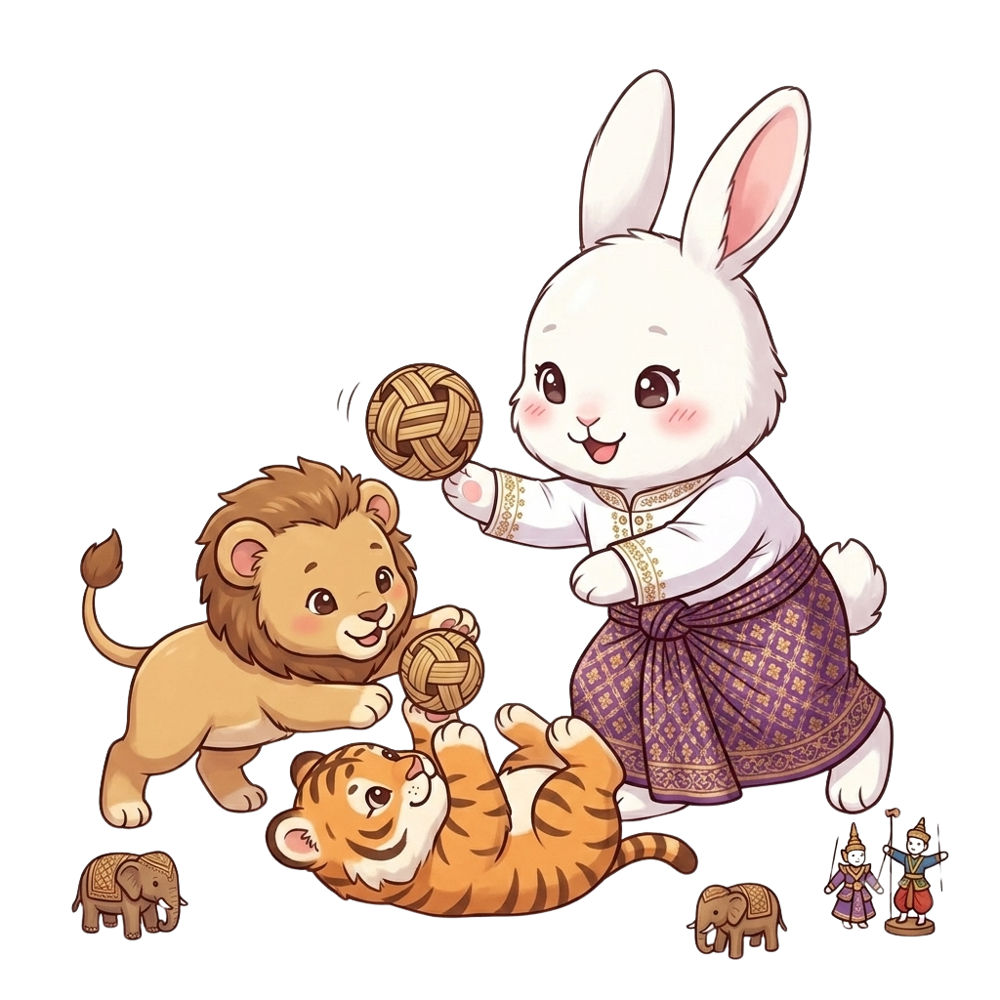

MAHABOTE · မဟာဘုတ်
🇲🇲 โหราศาสตร์พม่า
ศาสตร์โบราณแห่งแผ่นดินพม่า
ค้นพบสัตว์มงคลและดวงชะตาของคุณพี่ค่ะ
ค้นพบสัตว์มงคลและดวงชะตาของคุณพี่ค่ะ
วันพุธแบ่งเป็น 2 ช่วง — กลางวัน (ช้างมีงา) กลางคืน (ช้างไม่มีงา) ค่ะ

มหาโพธิ์เป็นศาสตร์โบราณแห่งแผ่นดินพม่าที่ใช้สัตว์มงคลประจำวันเกิดในการทำนายดวงชะตาค่ะ แต่ละวันในสัปดาห์จะมีสัตว์ประจำวันที่แตกต่างกัน สะท้อนนิสัยและความเข้ากันกับผู้อื่น ที่ My Tarot คุณพี่เพียงกรอกวันเกิด น้องจะบอกสัตว์มงคลประจำตัวและดวงชะตาของคุณพี่ให้ฟรีค่ะ